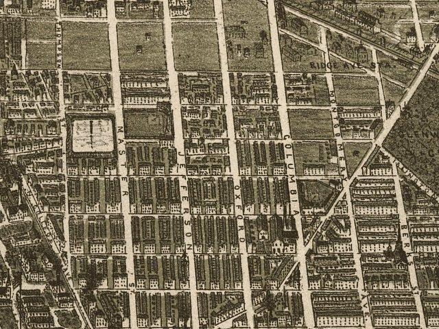

| Philadelphia, Pennsylvania - 1886: Jefferson Park and Recreation Park |
|---|
 |
| Philadelphia in 1886. H. S. P. del. Burk & McFetridge. CREATED/PUBLISHED Phila[delphia] c1885. NOTES Perspective map not drawn to scale. Bird's-eye-view. Differs from other edition in illus. of commercial buildings. Includes indexes and illus. of notable commercial buildings. REFERENCE LC Panoramic maps (2nd ed.), 829.1 |